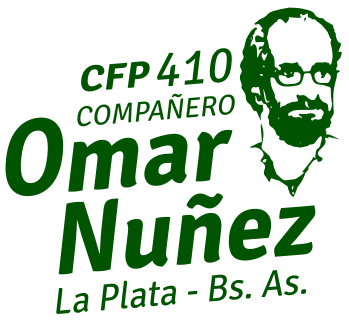

Curso: Fundamentos y usos prácticos de Docker
Introducción al curso
Presentación
Instructor: Cristian O. Giambruni
- APU. Facultad de Informática, UNLP
- Mat. CPCIBA 2402
- Docente CFL 410, Omar Nuñez
- Sysadmin Lotería Prov Bs.As.
- Programador y Sysadmin Startup
- Coordinador IDEP Informática
- Contacto: cgiambruni@gmail.com
Centro de Formación Laboral 410
El Centro de Formación Laboral N° 410 "Omar Núñez" es una institución de Formación Profesional que funciona en la ciudad de La Plata en el marco de un convenio con la Asociación Trabajadores del Estado (ATE)
El CFL 410 es uno de los cinco Centro de Formación Laboral conveniados con ATE, orientados a brindar capacitación técnica gratuita (no arancelada) para trabajadoras y trabajadores, en articulación con el sistema público de formación profesional.

Centro de Formación Laboral 410
Los cursos dictados en este centro cuentan con certificación oficial, expedida por la Dirección General de Cultura y Educación (DGCyE) de la Provincia de Buenos Aires, lo que garantiza su validez formal y reconocimiento institucional.
Contacto:
- 📍 Calle 7 N° 1429, e/61 y 62
- 📞 0221 484-6318
- 📧 cfl410@gmail.com
- 🌐 centro410laplata.edu.ar
IDEP Informática
El curso fue pensado, diseñado y trabajado desde el espacio de IDEP Informática, un ámbito específico del Instituto de Estudios sobre Estado y Participación (IDEP) de la Asociación Trabajadores del Estado (ATE) PBA.
Desde ese espacio:
- Piensan y diseñan cursos y capacitaciones técnicas,
- organizan charlas y actividades de actualización,
- analizan los cambios tecnológicos que impactan en el trabajo informático
- y se aporta a la discusión paritaria del sector informático estatal, vinculando formación, funciones y condiciones laborales.

Contacto y redes IDEP/IDEP Informática
Los cursos dictados en este centro cuentan con certificación oficial, expedida por la Dirección General de Cultura y Educación (DGCyE) de la Provincia de Buenos Aires, lo que garantiza su validez formal y reconocimiento institucional.
IDEP - ATE Provincia Buenos Aires
IDEP Informática
- Instagram: @ideppba
Organización del curso
- Apuntes y contenidos del curso en Campus Virtual IDEP
- Entre uno y cuatro laboratorios luego de la explicación teórica
- Trabajo final entregable a final de curso. El TP se sube en el Campus.
- Notificaciones mediante grupo WhatsApp
Contenidos y alcance
- Introducción a contenedores Docker
- Conceptos básicos de imágenes Docker
- Dockerfile
- Redes en Docker
- Volúmenes y persistencia en Docker
- Docker Compose
- Composes útiles
Requisitos inscripción
Requisitos para la inscripción formal en el CFL 410
- Dos fotocopias del DNI
- Certificado de estudios secundarios o superior
- Constancia de CUIL (en caso que el CUIL no esté en el DNI)
- Formulario: Solicitud de inscripción - Año lectivo 2026
- Inscripción en la plataforma del IPFL
- -Operadora/or en Contenedores Docker- - N° 44988
- Centro 410 - La Plata | ATE
- Importante: Hay que registrarse previamente en la plataforma del IPFL
- En papel impreso:
- Para aprobación del curso:
- 80% de asistencia.
- Aprobación del trabajo final.
IMPORTANTE: Toda esta documentación es solicidada por el Instituto Provincial de Formación Laboral (IPFL) y es fundamental para la obtención del certificado de aprobación.